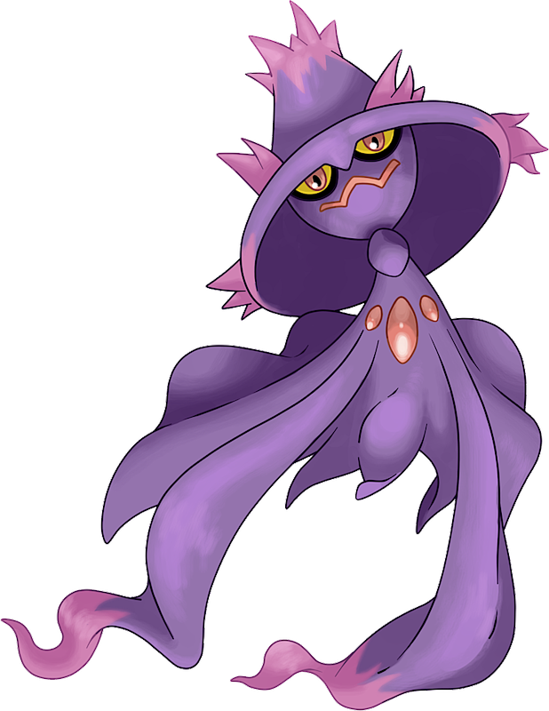
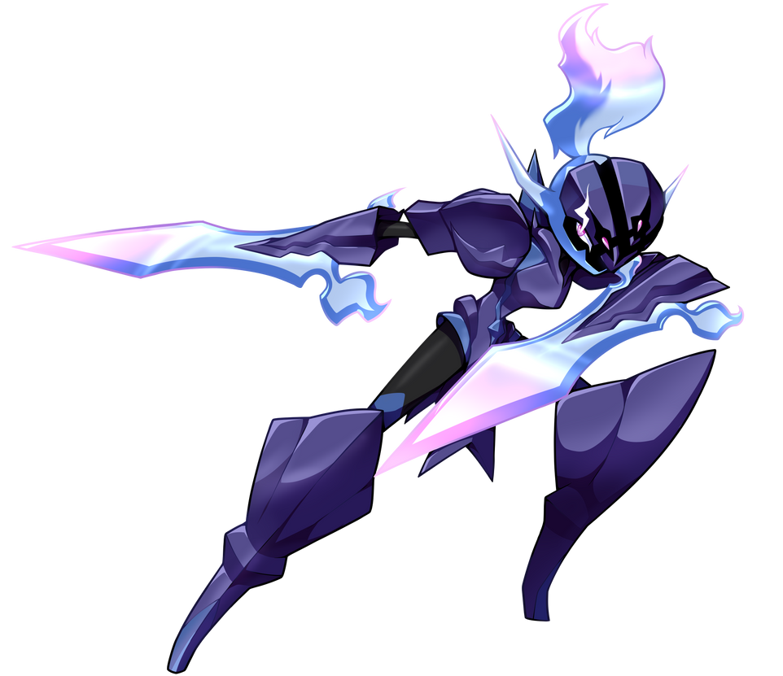
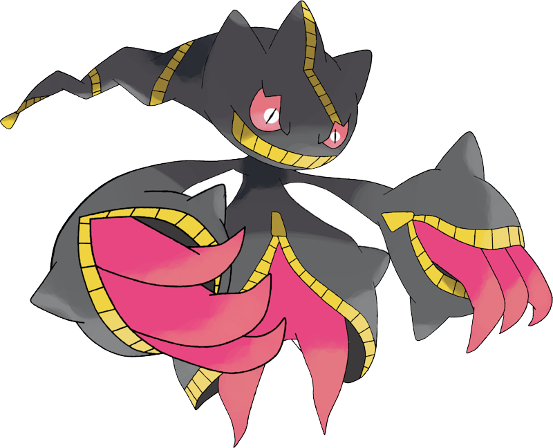

#1 Mismagius
Mismagius has always been an interesting choice as my number 1 ghost type. Even to me. I don't use it often, but, as far as ghost types go, it has my favorite design. The spectral witch hat and the ribbon like arms into the dress-like body is S-tier.
#2 Ceruledge
In the wake of the Scarlet and Violet games that have come out, I knew even before I bought the games I wanted Ceruledge on my team. The black knight theme has always been dope! The blade arms and the pokedex entry were truely the coolest. The Fire/Ghost typing lends itself to be a speedy damage dealer. But it doesn't take hits all too well.
#3 Chandelure
Chandelure is a late addition to the list. It's design isn't supper spectacular to me, but it's ability in battle is amazing. It has a high damage output and can take a decent beating. The Ghost/Fire typing offers a versitile mix. A fast attacker, a slow hit sponge, whatever you need to pad your team.

#4 Mega Banette
Mega Banette is my favorite mega design and my main reason for wanting megas to return. Banette's normal form isn't grand. The spindly arms look awkward on the body and I just can't bring myself to use it. But this mega looks amazing. The dark coloring with the open zipper AND the malicious spirit coming through the zippers that is terrifying.
#5 Haunter
I'll be honest. Not quite fan of Haunter. I wanted to keep the top five theme going, but I don't have many ghost types I would deem my favorites. The rest are cool, but don't stand out to me. Haunter is here because of the 3 OG ghost Pokèmon it looks the coolest.